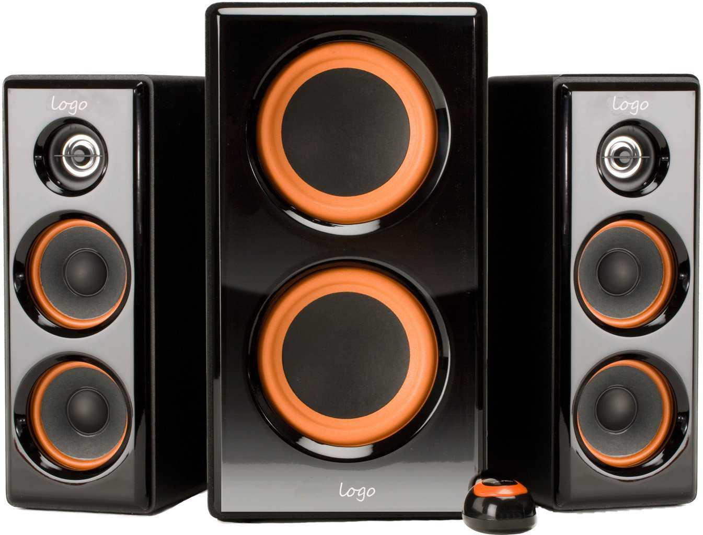
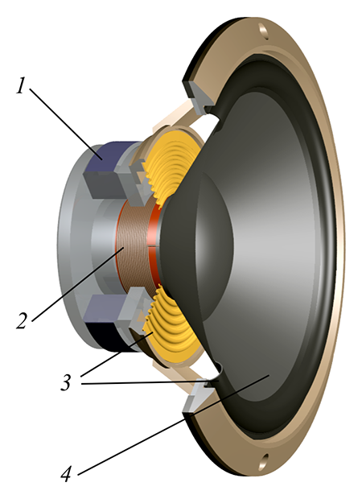

Making Noises
Table of Contents
1 Sound Theory
A biologist called Thomas Huxley said that people should try to learn something about everything, and everything about something. As we're making a speaker system, its probably wise that we take a moment to consider how sound is produced by a speaker. This will have the added advantage of helping you study for GCSE Science.
Making noises
- Sound is a mechanical wave; it needs a medium (e.g. air or water) to travel through. When an object (e.g. a tuning fork) vibrates, if pushes the air in front of it away from itself repeatedly. The pushed air molecules go on to push the particles they are near to, and in turn they push the next particles and so on.
- The more aggressively the output source moves, the more the air is disturbed, and the louder the resulting sound.
- The faster the vibrations from the sound source, the closer together the air pressure waves, and the higher the pitch of the sound to the person hearing it.
- If you're interested in reading more, sound is explained really well over at the Physics Classroom.
Speakers

- A speaker attempts to reproduce recorded sounds, by matching the intensity and speed of the original sound wave. Humans can hear sound in the range of around 20Hz - 20kHz. The ability to hear the highest-pitched sounds fades slightly through adulthood.
- No single speaker can reproduce the full range of sound that humans can hear, so in hi-fi sound systems, there are a variety of different speakers used.
- Sub-woofers are physically large speakers, which can create powerful sound pressure levels (due to their size), but cannot move fast enough to reproduce high frequencies. These are used to create powerful bass sounds, in the 20Hz-200Hz range.
- Mid-range drivers are the most common type of speaker, and are used in the project you will create. They cover a wide range of the sound frequency range, from 300 to about 5000Hz, which contains the range of most musical instruments and human voice. Most TVs use a pair of these for their built-in speakers.
- A Tweeter is a high-frequency driver to produce high-pitched sounds (typically 2000Hz-20,000Hz), and are named after the sounds of birdsong. These are typically very small, so that they can move quickly. By combining different speakers in a sound system such as that found in a cinema, excellent sound reproduction can be achieved.

- The most common type of speaker (a dynamic loudspeaker) is shown above. These work by the use of a permenant magnet (1) sat at the bottom of the speaker, which pulls/repels an electromagnet called the voicecoil (2) when a current is applied to it. This is held in place by a suspension (3) system, which keeps the coil centred in the gap in the magnet, and ensures the coil returns to a neutral position when there is no signal being sent to it. The voicecoil is glued to a paper diaphram (4), which is what pushes air particles as it is quickly turned on and off.
Badget - Speaker Technology
- Open your Word document that you previously wrote about sustainability in, and add a new sub-heading: Sound.
- Copy and paste the picture of the speaker system at the top of this section.
- Underneath it, explain in your own words how a loudspeaker works.
- Underneath this, identify which speaker is which in the photo you copied and pasted. For each:
- Say why you think that is. For instance, you might say that the top speaker in the left and right enclosures are tweeters, because they are very small.
- Explain what the benefit of having this type of speaker is.
- Find another picture of a sound system online (Argos have a good range), and idenfity the speakers in it.